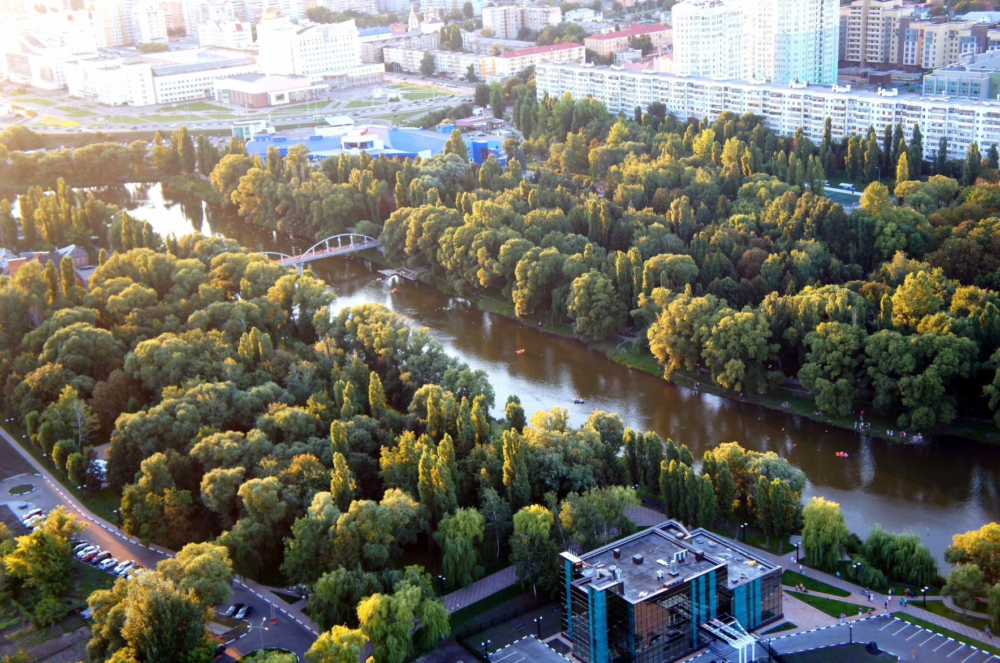

В центре Белгорода располагается живописный парк Победы,
который разделен на две части рекой Везелка. При входе
в парк установлена стела, на которой запечатлен указ,
рассказывающий о том, что в 1980 году Белгород получил
награду - Орден Отечественной войны I степени, благодаря
мужеству белгородских солдат.

В парке очень тихо, много деревьев и извилистых дорожек,
одна из которых ведет к музею «Огненная дуга». На главной
аллее, в центральной части парка установлен памятник
«Победа в Отечественной войне» - скульптурная композиция
символизирующая Победу, которая была достигнута с
помощью совместных усилий женщин, стариков и маленьких
детей. Памятник представляет собой фигуру женщины-солдата,
держащую в одной руке знамя, а во второй – букет цветов.
По обе стороны от женщины стоят два солдата, держащих в
руках автоматы, один из них молодой, а второй – более пожилой воин.
В 2001 году парк был дополнен Аллеей Героев Советского Союза
и Героев России – на гранитных постаментах установлено 17
металлических бюстов героям-освободителям. В конце аллеи
установлен памятник выдающемуся маршалу Георгию Жукову.
Кроме того, здесь расположен удивительно красивый фонтан,
украшенный скульптурой льва. Музыкальное сопровождение и
оригинальная подсветка не дают ему остаться незамеченным,
особенно вечером. Около него, как и у берега реки, прохладно,
так что жители города с удовольствием собираются здесь
в летнее время.
Кстати, в парке можно взять напрокат
лодку и покататься по тихим водам Везелки,
насладившись живописными видами. Поэтому,
несмотря на то, что все парки Белгорода
вызывают интерес и достойны внимания,
именно здесь обычно больше всего посетителей.